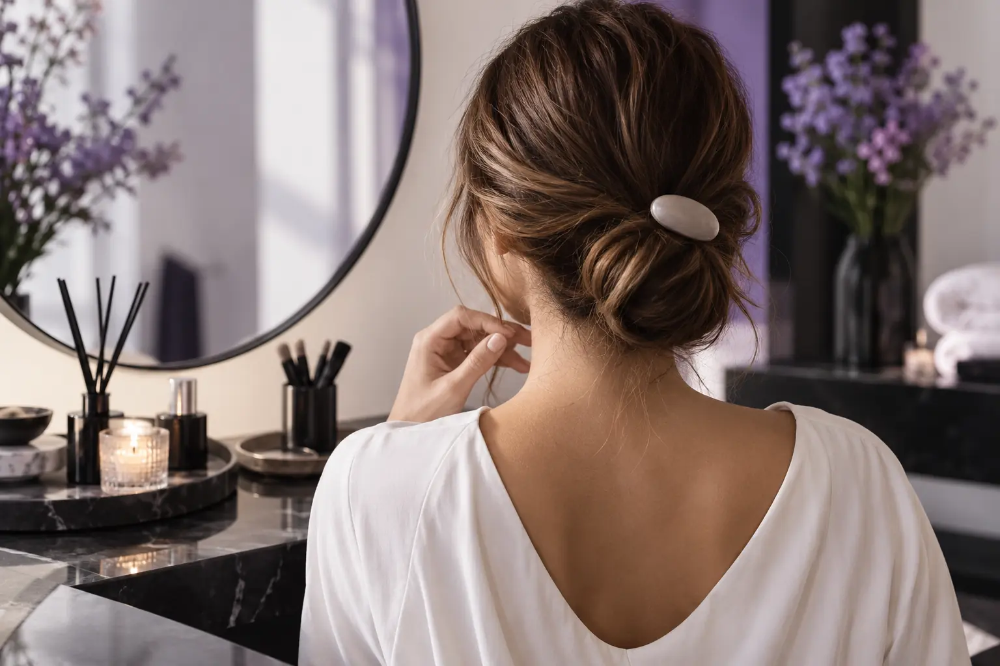

Susegta ar palaida proginė šukuosena: kaip apsispręsti?
Autorius: Madbeauty redakcija · Numatyta 2026 m. spalio 26 d. 16:00 (Lietuvos laiku)
Rinkitės pagal norimą siluetą, aprangą, aksesuarus ir pradinį plaukų ilgį. Sužinokite, ką iš anksto suderinti dėl vakarinės šukuosenos darbų apimties.

Susegtą ar palaidą proginę šukuoseną rinkitės pagal tai, ką norite atidengti, kaip šukuosena derės prie aprangos ir aksesuarų bei kokį rezultatą leidžia sukurti jūsų plaukai. Nė vienas variantas savaime nėra geresnis: galutinis siluetas ir reikalingi darbai priklauso nuo konkretaus sumanymo.
Pirmiausia nuspręskite, ką norite matyti
Susegtoje šukuosenoje plaukai tvirtinami visiškai arba iš dalies. Palaidoje plaukai paliekami laisvi. Tarp jų yra ir tarpinių variantų: pavyzdžiui, dalis plaukų gali būti atitraukta ar pritvirtinta, o kita dalis palikta laisva. Užuot rinkęsi vien pagal pavadinimą, apsibrėžkite norimą formą.
- Jei aprangos nugaros detalė, apykaklė ar pečiai turi likti matomi, nurodykite, kur šukuosena turėtų prasidėti ir baigtis. Dalinis susegimas gali būti alternatyva visiškai sušukuotiems plaukams.
- Jei svarbiausia ilgi plaukai aplink veidą ar pečius, parodykite, kiek jų norite palikti palaidų ir ar norite, kad būtų pritvirtintos tik kai kurios sruogos.
- Jei planuojate plaukų aksesuarą, parodykite jį arba apibūdinkite. Sutarkite, kurioje vietoje norėtumėte jį segti ir ar jis bus paruoštas vizitui.
Renginio užduoties matrica
- Apranga: įvardykite, ką norite atidengti arba išsaugoti siluete — pavyzdžiui, suknelės nugarą, apykaklę ar pečius. Priekyje ir nugaroje matomos aprangos nuotraukos padeda perteikti sumanymą.
- Aksesuarai: parodykite plaukų papuošalą, galvos apdangalą ar kitą prie šukuosenos derinamą detalę. Jei jos dar neturite, pasakykite, kad vieta ir pasirinkimas dar neaiškūs.
- Pradiniai plaukai: nurodykite dabartinį ilgį ir parodykite savo plaukus, o ne vien įkvėpimo nuotrauką. Jei norimas siluetas remiasi papildomu ilgiu ar apimtimi, aptarkite, ar toks variantas įmanomas ir kokios priemonės būtų reikalingos.
- Renginio laikas: nurodykite, iki kada turite būti pasiruošę ir kur vyks renginys. Tai suteikia kontekstą susitarti dėl paslaugos apimties bei vizito laiko.
Įkvėpimo nuotrauka padeda susitarti dėl formos
Pasirinkite vieną ar dvi nuotraukas, kurios geriausiai parodo norimą tvirtinimo vietą, bendrą siluetą ar aksesuarą. Prie kiekvienos pasakykite, kas joje patinka. Taip pat parodykite, kaip atrodo jūsų plaukai dabar. Įkvėpimo vaizdas yra pokalbio pradžia, o ne pažadas, kad toks pats rezultatas įmanomas su bet kokiu pradiniu ilgiu ar paslaugos variantu.
„Vakarinė šukuosena“ nepasako visos darbų apimties
Paslaugos pavadinimas pats savaime neatskleidžia, kokie paruošiamieji darbai įtraukti. Prieš patvirtindami vizitą patikrinkite, ar į nurodytą paslaugą įeina plaukų paruošimas, plovimas, džiovinimas, formavimas ir aksesuarų tvirtinimas. Jei reikia bandomojo vizito, atvykimo į renginio vietą ar papildomo darbo su ilgiu, įsitikinkite, kad tai aptarta atskirai. Kainos ir trukmės iš šio pavadinimo nustatyti negalima.
Trumpas aprašas susitarimui
Meistrui galite nusiųsti trumpą užduotį: „Renginio data ir pasiruošimo laikas — ___. Noriu atidengti ___. Palaidų plaukų dalis — ___. Mano dabartinis plaukų ilgis — ___. Aksesuaras — ___. Ši nuotrauka patinka dėl ___.“ Pridėkite savo plaukų ir aprangos nuotraukas. Tada aptarkite, kokia forma ir darbų apimtis yra įmanoma.
Jei norite peržiūrėti kategoriją, atverkite „Vakarinė šukuosena“ pasirinkimą. Tai nacionalinis katalogo pasirinkimas: miestą reikia pasirinkti atskirai, o jo buvimas kataloge negarantuoja konkrečių vietinių teikėjų ar laisvų laikų.
Planuojamos vidinės nuorodos
Šaltiniai peržiūrai
- Level 2 Hair Professionals handbook: consultation, cutting, styling and glossary — Read Unit203/204 factors, and glossary pp93–97: outline versus layered/graduated lengths, density/texture/growth, styling versus cutting. No single definition covers all bob/carré names; no guaranteed volume or maintenance result. This is published curriculum, not actual human stylist review.